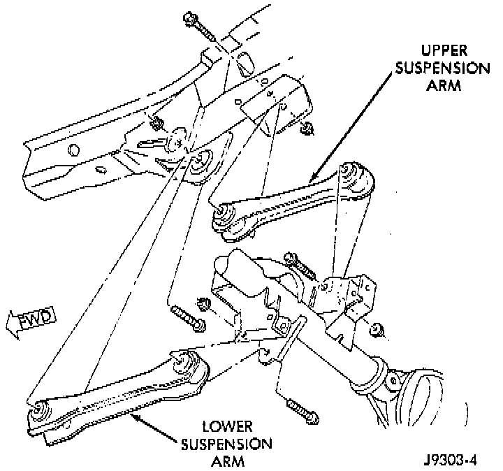

Upper

REMOVAL
1. Raise and support the vehicle.
2. Remove the upper suspension arm nut and bolt at the axle bracket. Remove the ABS wire bracket from the arm.
3. Remove the nut and bolt at the frame rail and remove the upper suspension arm.
INSTALLATION
1. Position the upper suspension arm at the axle and frame rail.
2. Install the bolts and finger tighten the nuts. Install the ABS wire bracket onto the arm.
3. Remove the supports and lower the vehicle.
4. Tighten the upper suspension arm nuts to 75 Nm (55 ft. lbs.).